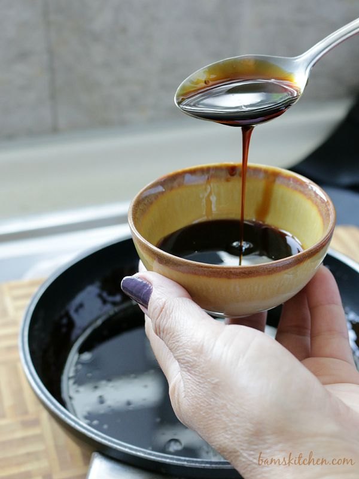

Amakuchi (Honey Soy Sauce)

Ingredients
1/4 cup honey
1/4 cup tamari (soy) sauce
1/4 cup oyster sauce
2 tbsp. water
Directions
In a small pan, mix all the ingredients.
Put the heat on low and continue slowly mixing for 5 minutes.